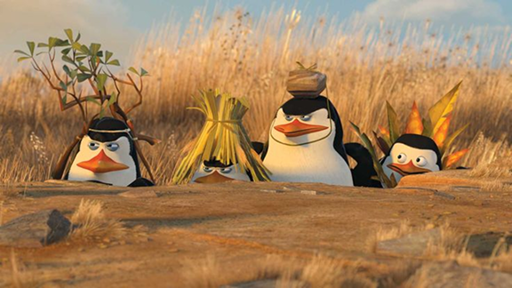

нажми на картинку
«Пингвины из Мадагаскара» (2014) — это весёлый спин-офф мультфильма «Мадагаскар», посвящённый приключениям четырёх харизматичных пингвинов: Шкипера, Ковальски, Рико и Прапора.
Эти спецагенты в перьях живут в Центральном зоопарке Нью-Йорка, но их жизнь далека от спокойствия — они постоянно попадают в нелепые и опасные ситуации, сражаются с врагами (вроде осьминога Дэйва) и даже путешествуют по миру.
Мультфильм сочетает динамичный юмор, абсурдные выходки и трогательную дружбу пингвинов, делая его отличным развлечением для детей и взрослых.